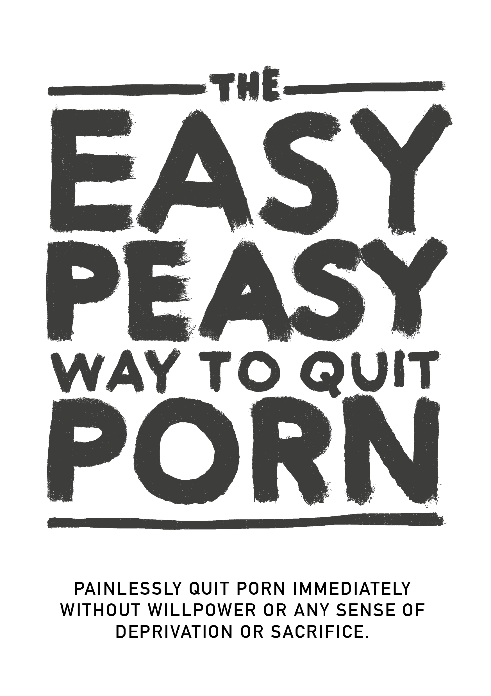

EasyPeasy (pt-br)
2022-12-30
Capítulo 1 Introdução

NÃO PULE CAPÍTULOS
Esse livro de código aberto lhe permitirá parar de usar pornografia imediatamente, sem dor, e permanentemente. Sem força de vontade ou qualquer sensação de estar sendo privado ou estar fazendo um sacrifício. Ele não lhe julgará, envergonhará, nem irá te pressionar a tomar medidas dolorosas.
Na verdade, não há necessidade de cortar ou reduzir seu uso durante a leitura; fazer isso é prejudicial, na verdade.
Pode ser que você esteja apreensivo quanto ao pensamento de parar em si ou uma das milhões de tentativas deliberadas de parar. Caso esteja, talvez o que já leu vá contra tudo que você escutou, mas se pergunte se o que você escutou funcionou? Se tivesse funcionado, você não estaria lendo esse livro.
Talvez você se identifica com as seguintes questões:
Você passa mais tempo do que o planejado assistindo pornô?
Você não obtêm sucesso nas tentativas de parar ou de limitar seu consumo de pornografia?
O tempo vendo pornografia já interferiu ou teve prioridade sobre compromissos pessoais ou profissionais, hobbies, ou relacionamentos na sua vida?
Você se esforça para manter o seu consumo de pornografia escondido (e.g. deletar o histórico do navegador, mentir sobre o consumo)?
Ver pornografia já causou algum problema significativo nos seus relacionamentos íntimos?
Você experimenta ciclos de excitação e prazer antes e durante o consumo da pornografia, seguido de sentimentos de vergonha, culpa e remorso depois do uso?
Você passa um tempo significativo pensando sobre pornô, até mesmo quando não está assistindo?
A pornografia já te trouxe alguma outra consequência negativa na sua vida pessoal ou profissional (e.g. faltar trabalho, performance baixa, relacionamentos negligenciados, problemas financeiros)?
Se você é um usuário da pornografia que depende dela para a masturbação ou sexo sempre e por qualquer razão, tudo que você precisa fazer é continuar lendo. Se você está aqui por alguém que ama, tudo que você precisa fazer é convencê-lo(a) a ler o livro. Se você for incapaz de persuadi-lo(a), leia o livro você mesmo(a). Entender o método ajuda a espalhar a mensagem e prevenir que seus filhos comecem a usar. Não se engane com o fato de que eles não têm acesso agora — todos acessamos antes de ficarmos viciados.
Sobre o Livro
Esse livro é um versão reescrita de uma adaptação do livro O Método Fácil de Parar de Fumar, de Allen Carr, para pornografia. O livro é grátis e de código aberto, sob licença CC-BY-SA. O sucesso do livro está sobre o fundamento de que você:
NÃO PULE CAPÍTULOS
Quando se está abrindo uma fechadura de código, você deve colocar os números na oredm certa. Com os vícios, não é nada diferente.
Pessoalmente, a [versão original do Google Sites] (https://web.archive.org/web/20201014165025/https://sites.google.com/site/hackbookeasypeasy/) (que não foi escrita por mim) mudou minha vida. Se você é como a maioria das pessoas, descobriu a pornografia quando era relativamente novo e tem usado dela desde então. Até tropeçar na esmagadora — e de alguma forma, censurada — literatura avisando dos perigos. Assim como eu, você provavelmente consegue sequências de variadas quantidades de tempo, mas sempre acaba eventualmente sucumbindo a impulsos ilusórios. Tenho o prazer de relatar que esse método funciona de uma maneira totalmente diferente e tem sido o único método que tem funcionado.
Ou talvez você chegou a esse livro por orientação de alguém preocupado contigo e você está cético. Primeiramente, obrigado por pelo menos olhar pro livro. Em breve o método será desenvolvido, mas, por favor, brevemente relembre a primeira vez que viu pornografia. Você esperava que fosse retornar a ela pelo resto da sua vida? De acordo com meus próprios estudos informais sobre esse tópico (importunar amigos para lerem esse livro), o Método Fácil é igualmente efetivo tanto para usuários casuais de pornô quanto para usuários altamente viciados. O livro não é terrivelmente longo, tem altas chances de grandes ganhos, então, imploro que continuem lendo.
O método descrito nesse hackbook é:
- Instantâneo.
- Igualmente efetivo para usuários casuais e altamente viciados.
- Não causa dor de abstinência.
- Não precisa de força de vontade.
- Não precisa de tratamento de choque, recursos auxiliares ou truques.
- Não vai necessitar que você substitua esse vício por outros vícios, como comer muito, fumar ou beber.
- Permanente.
Você pode achar isso impossível de acreditar, mas esse sentimento ecoa por muitas pessoas.
“Este é o trabalho seminal sobre o vício em pornografia”
— Um cara no reddit que não consigo encontrar, acho que o trocadilho foi intencional.
“Fiquei viciado por 10 anos. Naqueles 10 anos, estive debilitado pela depressão, dúvida, ansiedade e medo que meu segredo fosse descoberto. Depois de cada sessão, eu me odiava, e depois de cada dieta pornográfica eu estava de volta ao tobogã imediatamente. No entanto, este livro me ajudou a parar. Eu sempre estive na defensiva contra o pornô no passado. Agora, depois de ler este livro duas vezes, estou na ofensiva. A pornografia não tem controle sobre mim e parece uma piada de mal gosto agora.”
— u/DeepNewt
*"Há alguns dias, fiz 20 anos. Pela primeira vez em muito tempo, passei meu aniversário livre da armadilha da pornografia e é tudo graças a este livro em que esbarrei por acaso há apenas alguns meses. Antes disso, eu havia passado tanto tempo tentando parar por meios tradicionais, experimentei tantos tumultos internos e me rotulei permanentemente como um viciado. O livro resolveu tudo isso para mim. Onde eu anteriormente temia não ter controle sobre mim, mesmo quando eu, sem saber, já tinha vencido o pequeno monstro, agora posso ter orgulho em perceber que não preciso mais ser um viciado.
Eu não tenho uma razão pra postar isso, eu simplesmente senti que devia colocar isso pra fora em algum lugar sem ser dentro da minha própria cabeça, porque isso significa tanto pra mim. Se você estiver lendo isso e estiver pensando em ler ou recomendar o livro, vai comigo que ele funciona melhor que qualquer método por aí. Minha maior dica é que você faça anotações, o que soa engraçado, mas realmente me ajudou a solidificar certas ideias.* > > — u/Suspicious_Web_4594
“based”
— anon, /fit/
1.1 Atenção
Se você está esperando que este livro “assuste” você até abandonar, usando os vários riscos de problemas de saúde de usuários, como disfunção sexual (incluindo disfunção erétil induzida por pornografia), excitação não-confiável, perda de interesse em parceiros sexuais reais, hipofrontalidade cerebral e a acusação cega de que é um hábito imundo, nojento e que você é um estúpido, covarde, uma ameba sem força de vontade, você ficará dolorosamente desapontado. Essas táticas nunca me ajudaram a abandonar e se fossem ajudar você, você já teria desistido.
Métodos convencionais para abandonar o vício defendem o uso de força de vontade ou método de substituição do pornô, como dietas de “uma vez a cada n dias” ou diminuir o consumo. Alguns sites listam pesquisas revistas por pares sobre neurotransmissores e neuroplasticidade e embora esses sites sejam informativos, muitas pessoas, cientes dos riscos à saude, escolhem não fazer nada, apesar desse tipo de material ser tipicamente evitado. Em última análise, eles são igualmente ineficientes já que, de fato, não removem as razões para usar pornô. Em última análise, transformar algo num fruto proibido não é como você trata vícios.
Esse método, denominado Método Fácil, funciona de maneira diferente. Algumas das coisas que serão ditas podem ser difíceis de acreditar, mas quando você terminar este livro, você não apenas acreditará, mas também se perguntará como pôde ter sofrido uma lavagem cerebral para acreditar de outra forma.
Existe um equívoco comum de que escolhemos assistir pornografia. Viciados em pornografia (sim, viciados) não escolhem assistir pornografia mais do que os alcoólatras escolhem se tornar alcoólatras, do que os viciados em heroína escolhem se tornar viciados em heroína. É verdade que escolhemos inicializar o laptop ou smartphone, abrir o navegador e visitar nosso “harém online” favorito. Ocasionalmente, escolho ir ao cinema, mas eu certamente não escolhi passar minha vida inteira nas salas de cinema. Originalmente, a curiosidade e a natureza humana me levaram até lá, mas eu não teria começado se soubesse que me tornaria viciado, causando o declínio da minha saúde, felicidade e relacionamentos. “Se eu tivesse ao menos ouvido falar sobre disfunção sexual na minha primeira visita àquele site pornô!”
Tire um momento para refletir, você alguma vez tomou a decisão “positiva” de que você deve/precisa de pornografia para se masturbar? Ou que você deve/precisa usar fantasias induzidas por pornografia para apimentar o sexo com seu parceiro? Ou que, em certos momentos da sua vida, você não conseguiria ter uma boa noite de sono ou talvez até mesmo passar uma noite depois de um dia duro de trabalho sem navegar nos sites de pornografia? Ou que, você não conseguiria se concentrar ou lidar com o estresse sem ela? Em que estágio você decidiu que precisava de pornografia, que precisava dela permanentemente em sua vida, sentindo-se inseguro, até mesmo em pânico, sem pornografia, sem seu harém online?
Como qualquer outro usuário de pornografia, você foi atraído para a armadilha mais sinistra e sutil que o homem e a natureza já se uniram para inventar. Não existe uma pessoa viva, seja um usuário ou não, que goste da ideia de seus filhos usarem pornografia para lidar com problemas ou por prazer. Isso significa que todos os viciados queriam nunca ter começado. Isso não é surpreendente: ninguém precisa de pornografia para aproveitar a vida ou lidar com o estresse antes de ficar viciado.
Ao mesmo tempo, todos os usuários querem continuar a usar. Afinal, ninguém nos força a iniciar o modo de navegação anônima do nosso navegador. Quer eles entendam o motivo, quer não, são apenas os usuários que decidem bater às portas de seus haréns online.
Se houvesse um botão mágico que o usuário pudesse pressionar para acordar na manhã seguinte como se nunca tivesse acessado seu primeiro site “tube”, os únicos viciados amanhã seriam os jovens que ainda estão “experimentando”.
A única coisa que nos impede de desistir é o MEDO! Medo causado pela crença de que teremos que sobreviver a um período indeterminado de miséria, privação e desejo não saciado para nos livrarmos da pornografia. Eles são gerados por crenças irracionais, tanto aprendidas quanto adquiridas, como:
Masturbação ou sexo com orgasmo é a única e mais importante coisa na vida.
Pornografia é “mais segura” do que sexo na vida real porque a pornografia não pode me rejeitar.
A pornografia é educativa e útil.
Direito a uma experiência sexual “superior”.
Mais é sempre melhor.
Essas crenças irracionais geram consequências irracionais quando aplicadas, incluindo:
Adorar e ficar obcecado por um “10/10 perfeito”, quando esse é achado.
Perceber-se como um perdedor se você não fizer sexo, como se fosse a coisa mais importante na experiência humana.
Esperar por um 10 perfeito.
Julgar em excesso e ser excessivamente crítico sobre parceiros em potencial.
Obrigar-se a fazer sexo, querendo ou não.
É o medo de que uma noite sozinho será miserável e será gasta lutando contra impulsos incontroláveis. Medo de que a noite anterior às provas será uma noite infernal sem pornografia. Medo de que nunca seremos capazes de nos concentrar, lidar com o estresse ou sermos tão confiantes sem nossa pequena muleta e de que nossa personalidade e caráter mudarão.
Mas acima de tudo, medo de que “uma vez viciado, sempre um viciado”: que nunca seremos completamente livres, passando o resto de nossas vidas desejando um ocasional orgasmo induzido por pornografia em momentos difíceis. Se, como eu fiz, você já tentou todas as maneiras convencionais de parar e já passou pela miséria e tortura do “método da força de vontade”, você não será apenas afetado por esse medo, mas estará convencido de que nunca conseguirá parar.
Se você está apreensivo, em pânico ou sente que não é o momento certo para parar, deixe-me garantir que sua apreensão e pânico não são aliviados pela pornografia — são causados por ela. Você não decidiu cair na armadilha da pornografia, mas como todas as armadilhas, ela foi projetada para garantir que você continue preso. Pergunte a si mesmo, quando você viu aquelas primeiras fotos e vídeos pornô, você decidiu voltar para vê-los durante toda a vida? Então, quando você vai parar? Amanhã? Ano que vem? Pare de se enganar! A armadilha foi projetada para prendê-lo por toda a vida. Por que mais você acha que todos esses outros viciados não desistem antes dela “matar” a vidas deles?
Eu me referi a um botão mágico; o Método Fácil funciona como aquele botão mágico. Deixe-me ser claro, o Método Fácil não é mágico, mas para mim e para outros que acharam tão fácil e agradável parar, parece que sim!
O aviso é o seguinte: Esta é uma situação da galinha e do ovo: todo viciado deseja parar e todo viciado pode achar fácil e agradável parar. É apenas o medo que impede os usuários de tentarem parar. O maior ganho é se livrar desse medo, mas você não ficará livre desse medo até que conclua o livro. Pelo contrário, seu medo pode aumentar à medida que você continua lendo, o que pode impedi-lo de terminá-lo. Olhe este comentário de uma mulher.
“Acabei de terminar Método Fácil. Eu sei que se passaram apenas quatro dias, mas me sinto tão bem, eu sei que nunca vou precisar usar pornografia novamente. Comecei a ler o seu livro cinco meses atrás, cheguei na metade e entrei em pânico. Eu sabia que se eu continuasse a ler eu teria de parar. Não fui boba?”
Você não decidiu cair na armadilha, mas esteja claro em sua mente: você não vai escapar dela a menos que tome a decisão afirmativa de escapar. Você pode já estar muito ansioso para parar, ou pode estar apreensivo com o pensamento de parar em si, mas de qualquer forma, por favor, mantenha em mente: VOCÊ NÃO TEM NADA A PERDER!
Se no final do livro você decidir que quer continuar a usar pornografia para se masturbar ou fazer sexo, não tem nada que o impeça de fazer isso. Você não precisa nem diminuir o uso ou parar de usar pornografia enquanto lê o livro e, lembre-se, não há terapia de choque. Pelo contrário, só tenho boas notícias para você. Você pode imaginar como Andy Dufresne se sentiu quando finalmente escapou da Penitenciária de Shawshank? Foi assim que me senti quando escapei da armadilha da pornografia, e é assim que os ex-usuários que usaram o Método Fácil se sentem. Ao final do livro, é assim que você vai se senti! Vá em frente!
Finalmente…
Todo mundo pode achar fácil e agradável parar com a pornografia, incluindo você! Tudo que você tem que fazer é continuar lendo o livro com a mente aberta; quanto mais você entender, mais fácil será. Mesmo se você não entender uma palavra, desde que siga as instruções, você achará fácil. Mais importante: você não viverá se lamentando por querer pornografia ou se sentindo privado, e ao final do livro o único mistério será porquê você fez isso por tanto tempo.
Com o Método Fácil só há duas razões para o fracasso.
Falhar em seguir as instruções. Alguns acharão chato que esse livro é tão dogmático com algumas recomendações, como não tentar diminuir o uso ou usar substitutos. Eu, certamente, não nego que há muitos que tiveram sucesso em parar usando essas artimanhas, mas eles tiveram sucesso apesar delas e não por causa delas. Algumas pessoas conseguem fazer amor em pé numa rede, mas não é o modo mais fácil. Os números da senha para abrir o cadeado dessa armadilha estão nesse livro, mas é necessário digitar eles na ordem correta: ir de um capítulo em capítulo e sem pular capítulos.
Falhar em entender. Não aceite nada como correto, questione não só o que te contam, mas sua própria visão e o que a sociedade te contou sobre sexo, pornô da internet e vício. Por exemplo, quem acredita ser apenas um hábito, pergunte a si mesmo por que outros hábitos — alguns que são até agradáveis — são fáceis de quebrar, enquanto um hábito que traz sensações horríveis, que custa energia, tempo e virilidade é tão difícil de quebrar. Aqueles que acreditam que apreciam a pornografia, perguntem a si mesmos por que outras coisas que são infinitamente mais prazerosas você consegue escolher se usa ou não sem dificuldades. Por que você tem que usar pornô, entrando em pânico se não usar?
O Método Fácil te dará o conhecimento de quão fácil e agradável é abandonar a pornografia. Como muitos outros, um dos maiores triunfos na vida tem sido escapar da armadilha da pornografia. Não há necessidade de se sentir deprimido, pelo contrário, você está prestes a realizar algo que todo usuário do planeta adoraria alcançar: LIBERDADE!
LEMBRE-SE, NÃO PULE CAPÍTULOS.
Alguns termos antes de começar: PMO: O ciclo da pornografia, masturbação e orgasmo. Harém virtual: Sites que possuem pornografia.
1.2 Dicas para leitura e pequenas notas finais
Não leia esse livro como um livro normal, ele é muito curto e você deve ser capaz de terminá-lo em duas horas. A maioria das pessoas se beneficia de marcar ou fazer anotações e geralmente recomenda relê-lo algumas vezes para solidificar totalmente as lições.
Por que o hackbook? Porque o Allen Carr faleceu há muito tempo e as instituições que ele formou não listam a pornografia da internet como um dos vícios para os quais eles oferecem tratamento. Eu não faço lucro ou algo assim.
Ao longo desse livro, eu, o Hackauthor original e Allen Carr vamos aparecer transparentemente a fim de te proporcionar um método único e convincente de parar facilmente e sem dor.
Hackbook: Um livro baseado e "“hackeado”" de outro livro. O autor original é totalmente creditado.
Existem várias comunidades para o hackbook também, mas recomendo verificá-las somente depois de terminar de ler o livro.
urbit - ~mislyr-midnyt/coomer (agora realmente funciona!! melhor metodo de contato possivel, pf usa esse) | coomer meme archive | analytics (do site original) | matrix | discord | reddit | formulário de feedback
Lembrete rápido: NÃO PULE CAPÍTULOS
Eu lhe desejaria sorte, mas como você aprenderá em breve, você não precisa dela.
Boas vibrações,
Hackauthor²

This work is licensed under a Creative Commons Attribution-ShareAlike 4.0 International License. Code is GPLv3.